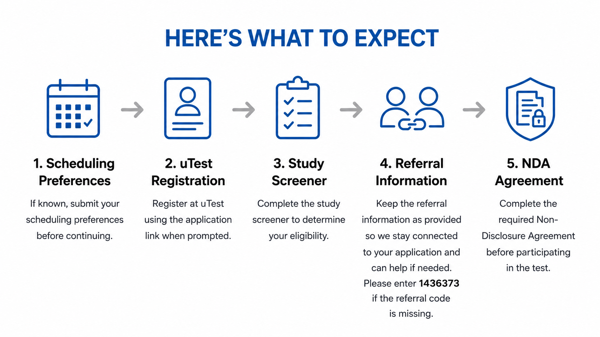
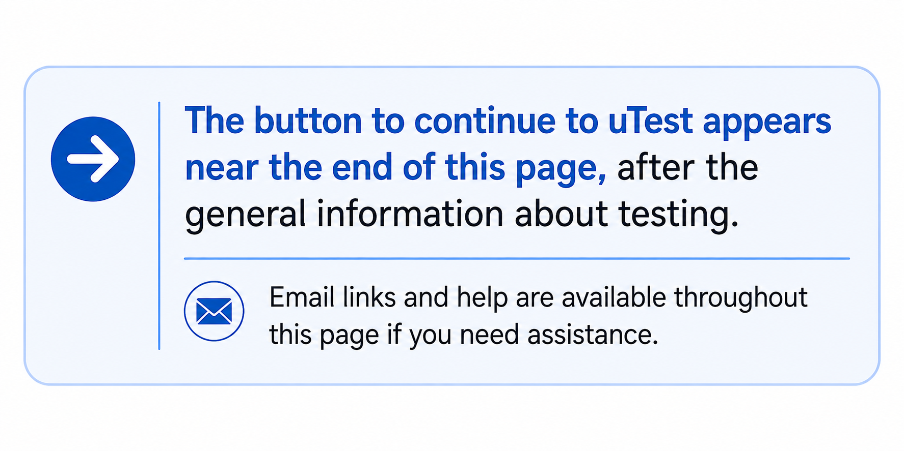
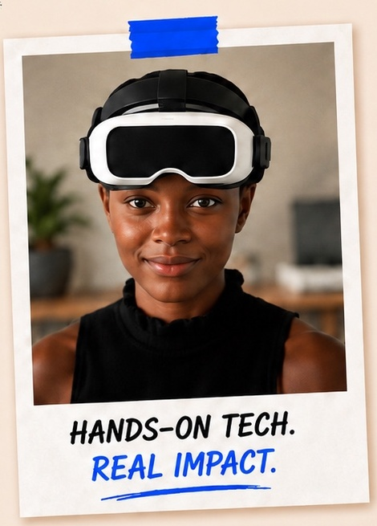

Thanks again for your time and assistance Daniel.
Luke S.Paid testing participant
Test wearable technology and
earn $150
for an approximately
3-hour, in-person session.Test wearable technology
and
earn $150 for an
approximately
3-hour, in-person session.
Thank you for your interest in the wearables study!Thank you for your interest in the study!Thank you for your
interest in the study!Weekday sessions are offered
at
9:00 AM and 1:30 PM.
No technology experience required.
Participation is subject to eligibility and successful screening.
You'll continue to the official
uTest registration process.
No technology experience required.
Participation is subject to eligibility and successful screening.
Thank you for your interest in testing wearable technology!
You'll first create a uTest account and follow a link to complete the study's brief application/screener and NDA
(non-disclosure agreement).
After creating your uTest account, you'll be asked to confirm your account by email.

Tap to enlarge

Keep that uTest page open.
Check your email using your email app, a different browser tab, or another device. After confirming your account, return to the original uTest tab or window and click Continue To Application.
This allows your new uTest account information — including your uTest ID, name and email — to carry over automatically to the study application.
Don't close the original uTest tab or window or wait too long to continue.
If you leave the signup flow and cannot return to that page, the automatic handoff may be lost. You may then need to log in to uTest, locate your uTest ID, and take additional steps to complete the study application.
Best practice: Keep the original uTest tab open until you have reached the study application.
Don't create another uTest account. Log in to your existing account and locate your uTest ID.
If you still need to complete the study application, email info@paidtoplaytesting.com or text
(646) 777-4460 for assistance accessing the appropriate application form.
Already have your uTest ID? Include it when contacting us so we can help you get back on track more quickly.
You can also scroll to the bottom of this page to submit a help request.

If you know your preferred dates, you can enter your preferences below.
If not, simply continue to uTest registration and you can return here later to submit your scheduling preferences.
Current availability is shown for planning purposes and may change. Sign up soon to help secure your preferred slot.
Thank you! Your scheduling preferences have been received.
You indicated that you have previously participated in an on-site uTest test. Previous participation may affect eligibility for this study, depending on the test you completed and how long ago you participated.
You indicated that you are not sure whether you have previously participated in an on-site uTest test. If you have, it may affect eligibility for this study, depending on the test you may have completed and how long ago it was.
If you have not already done so, please complete the current uTest application and any required NDA. uTest will determine your eligibility and, if you are eligible and selected, will contact you directly to schedule.
This is a scheduling preference only and does not reserve or confirm a session.
Need to change your dates or times? You can update your preferences at any time. Your newest submission will supersede your earlier preferences. You can also return to this page later — even in a new visit — and submit updated preferences at any time.
Questions or need assistance? Email info@paidtoplaytesting.com. We will respond as soon as possible, typically within 24 business hours.
Once your application is complete and you qualify, uTest should generally contact you regarding next steps within 48 business hours. If you would like a status update or help expediting the process, or if more than 48 business hours have passed without hearing from uTest, feel free to reach out to us.
Ready to continue? Follow the application instructions below.
Want to try to confirm your appointment as soon as possible?
If you provide the requested information, we can send you the direct uTest scheduling hotline to contact after completing your application, which can help expedite the scheduling process.
Not ready to schedule yet? No problem.
You can complete the uTest process first and await contact, or return here anytime to submit your preferred dates and times.
After submitting the study application, be sure to complete the required NDA (Non-Disclosure Agreement) using the link provided on the page that follows your submission.
The NDA must be completed before you can be officially scheduled and participate in the test. Follow the instructions after submitting your application and complete it promptly.
Then watch for confirmation from uTest. After completing your application and NDA, uTest will contact you regarding participation and scheduling, generally within 2 business days.
The application will automatically fill in referral information. Please leave any pre-filled referral information unchanged. It connects your application to this referral and allows us to assist with the process as a “concierge,” including answering your questions, responding to uTest on your behalf, and, in some cases, helping to expedite scheduling or resolve payment questions.
If you provide your contact information, we can also help track current availability, manage your preferred and backup dates, and, when possible, help you find an earlier session. You can also submit or update your scheduling preferences above.
If no referral information is listed, please enter 1436373 in the referral uTest ID field when prompted.
A new tab will open to continue through the official uTest application flow.
You can switch back to this tab at any time if you need assistance or want to submit or update your scheduling preferences.
Questions or stuck during signup?
Paid to Play Testing can help you navigate the registration and application process.
Email info@paidtoplaytesting.com for assistance.
We typically respond within 24 hours on business days.
Plan ahead for your visit. Please arrive about 15 minutes before your appointment and allow extra time for transportation delays. If you arrive more than 5 minutes after your session begins, you may not be able to participate that day. Rescheduling opportunities may be limited, so please be punctual.
Quick, convenient payment options. After completing the study, choose a Tremendous Virtual Visa or PayPal transfer. And keep an eye out for additional opportunities to earn through other tests and bonuses.
We welcome adults of all ages, backgrounds, and walks of life.
Real feedback from people we’ve helped through the testing process.
Thanks again for your time and assistance Daniel.
Luke S.Paid testing participant
Thank you Daniel. I appreciate all you have done for me.
Catalina R.Paid testing participant
Wooo hooo! 🎉🎉
… I checked the trash and there it was 😺
Maribel M.Paid testing participant

Real people. Real testing opportunities. Personal help when you need it.
A new tab will open to continue through the official uTest application flow.
You can switch back to this tab at any time if you need assistance or want to submit or update your scheduling preferences.
If you have questions or run into trouble during registration, email info@paidtoplaytesting.com or use the optional assistance form below.
Paid to Play Testing can help you navigate this registration and application process. Providing your information is optional, and you can apply directly without requesting assistance.